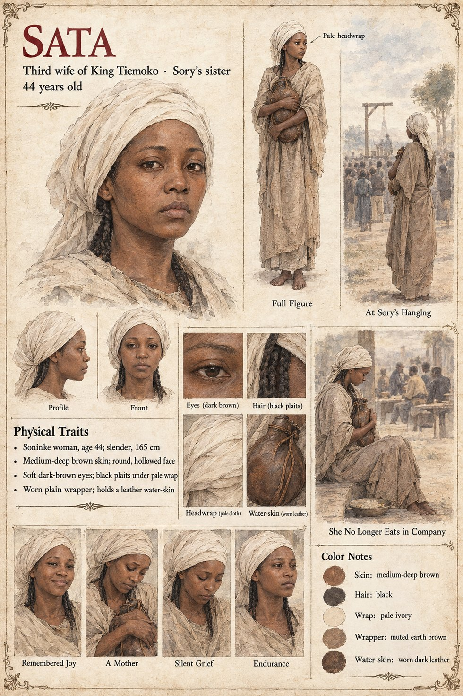

Sata
Third wife of King Tiemoko · mother of Bakary, sister of Sory · 44 years old on her sheet
The third wife, young and cheerful, remembered chiefly as the mother of a boy: Bakary, born fourteen winters after Sekou, when the first two sons were already old enough to have opinions about him. When he is brought home across a gate-shutter with the water-skin still on his shoulder, her cry is heard in the lower town. She would never again eat a meal in company. Her brother Sory, a warden who loved the boy as a second son, hears it too, and goes out into the street with his hands empty and comes back with them full.
When Sekou hangs Sory at dawn on the ninth of Kerren from the old tamarind in the gold-weighing yard, Sata asks to be present. She stands at the foot of the tree in the wrapper she has worn since the day they carried Bakary home, with the water-skin in her hands, which Sory had kept on a nail above his sleeping-mat and she took down the night before, and she does not look at her brother's face. She looked at his feet, which hung a little above the market dust, bare, and she looked at them without blinking until a warden cut him down, and then walks home with the water-skin held against her chest as she once held a boy, and does not eat. The manuscript does not say what becomes of her after.
The manuscript gives her youth, her cheerfulness, her son and her brother; no age, face or build. The sheet's age of 44, slender 5 ft 5 in (165 cm) frame, medium-deep brown skin, round hollowed face, soft dark-brown eyes, black plaits under a pale ivory wrap and worn plain wrapper are its own, as are its panels Remembered Joy, A Mother, Silent Grief and Endurance and its scenes At Sory's Hanging and She No Longer Eats in Company. Sory has no sheet and so no page here.
“She would never again eat a meal in company.”